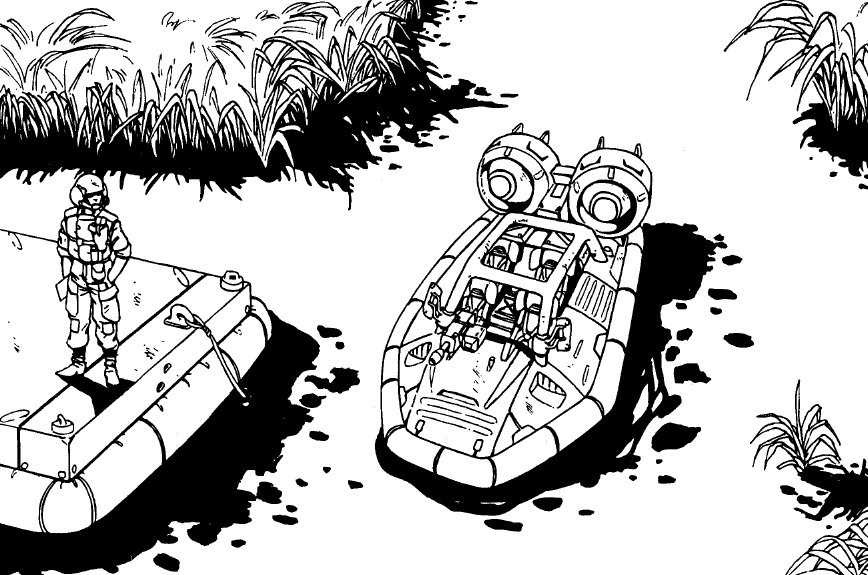
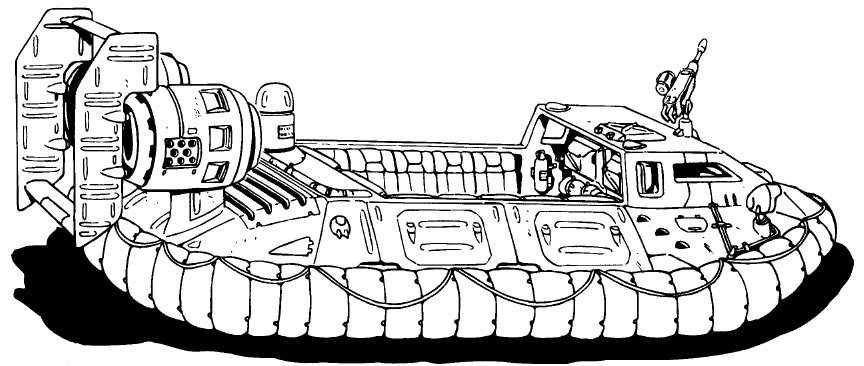
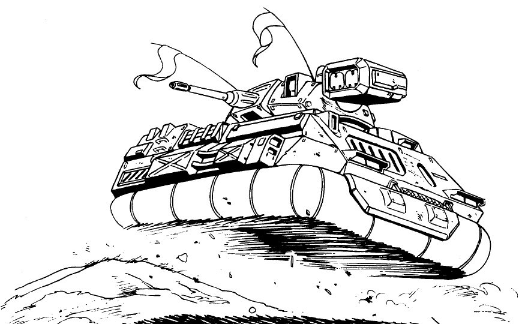

Les aéroglisseurs ont leur utilité. Ils sont plus rapides que la plupart des autres véhicules terrestres (à part les roquettes et les dragsters) et ils n'ont pas de problème en cas de changement terre/mer. Militairement c'est la fin de leur utilité car ils ne peuvent pas traverser des forêts ou des terrains accidentés, leur manque de maniabilité font passer les camions pour gracieux, ils sont trop léger pour supporter beaucoup de blindage ou d'armement, ils consomment beaucoup de fuel et ils font beaucoup de bruit. De plus, dans des conditions poussiéreuses, ils soulèvent tellement de poussières qu'on peut les voir à des lieux à la ronde. Cela a juste l'avantage de rendre les fumigènes inutiles.
Les "Panzers", des aéroglisseurs armés rapides, sont populaires au sein de quelques unités de mercenaires et de contrebandiers. Introduit dans la Navy comme aéroglisseur de combat, ils accompagnent les Marines Corps débarquant sur les plages et à l'intérieur des terres pour fournir un tir de support. En dehors des plages, leurs abilités deviennent apparentes et, lorsque les forces militaires voient leurs forces réduirent, beaucoup d'entres eux sont déployés en soutien. Des nombreuses unités sont incorporées au sein de la National Guard et de la Coast Guard et servent dans le Golfe du Mexique et dans le Mississipi.
| GEB Duster | ||
|  | ||
|
||
| La version de base du Duster (non blindé et dépourvu du montage pour arme) est un bateau de plaisance sur le marché civil. La version militaire est plus une hoverjeep qu'un véhicule blindé, mais il est utilisé pour les patrouilles maritimes dans de nombreuses corporations. C'est l'équivalent aquatique du Kuma d'Arasaka-Mitsubishi. Equipements spéciaux : |
| GMI Hovertruck | ||
|  | ||
|
||
| Variante de l'APC d'U.S.M.C, l'Hovertruck a été modifié pour servir à la fois de transport de troupes et de cargo. Equipements spéciaux : Armement : |
| Militech A-20 ACAV | ||
|  | ||
|
||
| Le "Panzer", rendu célèbre par les films de Combat Cabbant, s'est débarrassé de l'armement varié du modèle originel de la Navy, mais lui reste en de nombreux points similaire. Comme les APCs d'Arasaka, il est vraiment trop légèrement blindé pour affronter les Big Boys. Le Panzer peut espérer attaquer rapidement avec ses missiles et battre en retraite avant que l'ennemi ne réponde. Equipements spéciaux : Armement : |